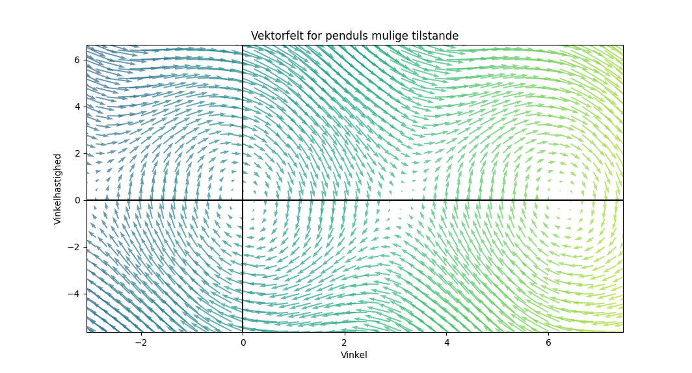
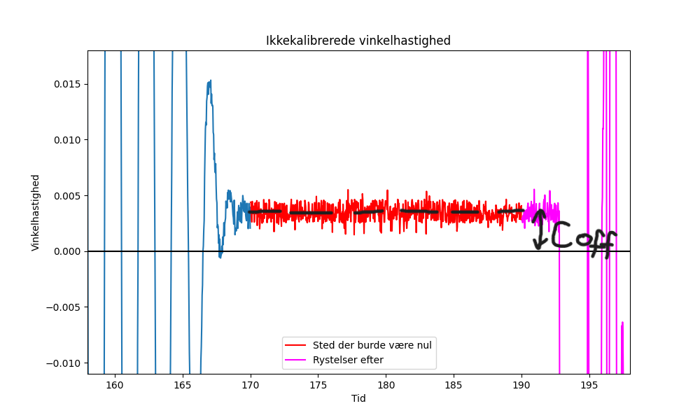
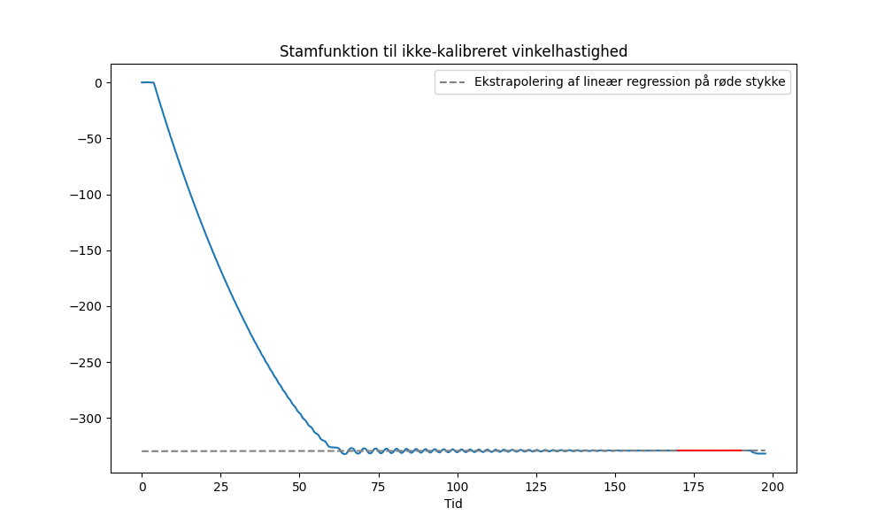

Studieretningsprojekt: Vektorfelter og fysiske penduler
Dette er highlights fra mit studieretningsprojekt i gymnasiet, som jeg skrev i matematik A og fysik A.
Opgaven handlede om at beskrive et fysisk pendul med en differentialligning. Og at bruge vektorfelter i den forbindelse.
 Link til min GitHub-repository hvor det meste af min Python-kode ligger. Jeg henviser løbende til relevante filer, bare hold øje med GitHub-ikonet.
Link til min GitHub-repository hvor det meste af min Python-kode ligger. Jeg henviser løbende til relevante filer, bare hold øje med GitHub-ikonet.

Resumé
I det her projekt opstillede jeg en differentialligning for et fysisk penduls bevægelse med dæmpning. Jeg bruger et vektorfelt/faserum til at løse differentialligningen numerisk. Desuden udvikler jeg en række numeriske metoder til at trække information ud af mine 26.000 målepunkter.
Credit
Idéen til min SRP har jeg egentlig tyvestjålet fra 3b1b. Eller lad mig sige det sådan: Meget af teorien i opgaven bærer tydeligt præg af hans fremragende video om stoffet:
3b1b: Differential equations, studying the unsolvable
Det originale i min opgave er at jeg opstiller en differentialligning der gælder for et hvilket som helst stift pendul, hvor 3b1b fokusserer på det simple pendul. Desuden antager 3b1b, at friktionen i pendulet er proportional med vinkelhastigheden \(\dot{\theta}=\frac{d\theta}{dt}\), hvor jeg prøver at gå et spadestik dybere og lave fysiske målinger af pendulet i et forsøg på at afdække den nøjagtige sammenhæng mellem dæmpningen og vinkelhastigheden \(\dot{\theta}\) (og om dæmpningen evt. også kunne afhænge af vinklen \(\theta\)). Dvs. min tilgang er både teoretisk og empirisk.
Teori
Ved hjælp af nogle fysiske overvejelser, kan man komme frem til at en realistisk model af et fysisk pendul med friktion kan beskrives med denne differentialligning:
\[
\boxed{
\huge \ddot{\theta} = \mu(\dot{\theta}) + \frac{mgd}{I}sin(\theta)
}
\]
Forklaring:
-
\(\theta\) (theta) er vinklen målt i radianer. Vi bestemmer, at pendulet har en vinkel på 0 radianer, når det er lodret, altså når massemidtpunktet befinder sig direkte under rotationsaksen, hvilket medfører, at den potentielle energi er mindst ved \(\theta=0\). Vi bestemmer, at vinklen stiger, når pendulet drejer modsat urets retning (og vinkel bliver dermed mere negativ, når pendulet drejer med urets retning).
-
\(\dot{\theta}=\frac{d\theta}{dt}\) er vinkelhastigheden, dvs. vinklen differentieret (nogle gange bruges i stedet \(\omega\) (omega). Det har jeg fx gjort i koden). Den måles i radianer per sekund, og er et mål for, hvor hurtigt pendulet drejer. Det følger af det, vi har besluttet om vinklen, at en positiv vinkelhastighed svarer til, at pendulet drejer modsat urets retning.
-
\(\ddot{\theta}=\frac{d^2\theta}{dt^2}\) er vinkelaccelerationen, dvs. vinkelhastigheden differentieret, eller vinklen differentieret to gange (nogle gange bruges i stedet \(\alpha\) (alpha). Det har jeg fx gjort i koden). Den måles i radianer per sekund per sekund, og er et mål for, hvor hurtigt pendulet ændrer hastighed.
-
\(\mu(\dot{\theta})\) er en funktion, der angiver sammenhængen mellem friktionen og vinkelhastigheden. I 3b1b's video antages det, at \(\mu(\dot{\theta})=-\mu\cdot\dot{\theta}\), men den kunne i princippet være mere kompliceret.
-
\(m\) er den masse, der er i bevægelse, fx lod plus arm.
-
\(g\) er tyngdeaccelerationen.
-
\(d\) er afstanden fra massemidtpunktet til omdrejningsaksen.
-
\(I\) er intertimomentet i pendulet ift. omdrejningsaksen.
Differentialligningen kan udledes vha. nogle fysiske love. Her vil jeg fremhæve loven \(\sum \vec{\tau}=\vec{\alpha} \cdot I\). Dvs. at vinkelaccelrationen er proportional med det resulterende kraftmoment (torque) på pendulet, dvs. den kraft der drejer det.
Logikken i modellen bygget direkte på den lov. Overordnet set er der nemlig to kraftmomenter, der virker på pendulet:
-
Dæmpningen, som er en samlebetegnelse for gnidningen/friktionen/luftmodstanden
-
Vægten pga. tyngdekraften.
Ifølge loven fås vinkelaccelerationen (som er interessant for os) altså ved at lægge alle kraftmomenter sammen og dele med inertimomentet \(I\).
Jeg vil ikke gå i detaljer med udledningen af kraftmomentet fra tyngdekraften, men det involverer at tage krydsproduktet mellem tyngdekraften og vektoren fra omdrejningspunktet til massemidtpunktet. (Størrelsen af) det giver \(mgd \cdot sin(\theta)\).
Løsningen
Vi er interesserede i løsningen til differentialligningen, altså en funktion \(\theta(t)\). Der findes ingen analytisk løsning i dette tilfælde, men vi kan stadig løse det numerisk. Tænkt det sådan her:
Antag at de fire konstanter \(m\), \(g\), \(d\) og \(I\) er kendt og at du kender funktionen \(\mu(\dot{\theta})\). Lad os sige og at du kender startvinklen \(\theta_0\) og startvinkelhastigheden \(\dot{\theta}_0\). Vha. disse kan du udregne startvinkelaccelerationen \(\ddot{\theta}_0\) ved blot at indsætte de kendte værdier i ligningen. Vi ønsker at løse differentialligningen numerisk, hvilket er en anden måde at sige at vi gerne vil forudsige pendulets bevægelse i fremtiden.
Vi kender pendulets starttilstand \((\theta, \dot{\theta})\). Vi kan ikke umiddelbart beregne en vilkårlig tilstand langt ude i fremtiden, men vi kan faktisk beregne, tilstanden efter en lille tidsskridt. Ved at tage mange små tidsskridt, vil vi før eller siden nå frem til det ønskede tidspunkt der kan ligge langt ude i fremtiden.
Vi kan let regne os frem til en kommende tilstand, hvis denne tilstand kun kræver et lille tidsskridt. Det er her, vektorfeltet/faserummet kommer ind i billedet.
Som vist øverst kan man opstille et vektorfelt, som angiver hvordan en given tilstand ændrer sig, som systemet udvikler sig. Man kan tænkte det sådan, at vektorerne i vektorfeltet angiver den hastighed tilstanden \((\theta, \dot{\theta})\)bevæger sig med i dette abstrakte faserum.
En anden måde at sige det samme på: Vektorfeltet knytter den differenteirede tilstand til hver tilstand i faserummet \((\theta, \dot{\theta})\).
Det kan være svært at forestille sig, så jeg har prøvet at illustrere idéen her:

Se filen TryMe1.py i min GitHub-repository for koden bag animationen. Matematikken i koden forklares på denne side.
Bemærk at den røde prik følger vektorerne. Bemærk desuden at farten af det røde punkt svarer til længden af den vektor den er på. Nogle vektorer har en længde på 0. Dvs. at tilstanden er i balance.
Den røde priks positions er \(\begin{pmatrix}\theta \\ \dot{\theta} \end{pmatrix}\). Den bevæger sig pr. def. i dette abstrakte rum med hastigheden \(\frac{d}{dt} \begin{pmatrix}{\theta} \\ \dot{\theta} \end{pmatrix}=\begin{pmatrix}\dot{\theta} \\ \ddot{\theta} \end{pmatrix}\).
Da \(\ddot{\theta}\) kan beregnes ud fra tilstanden, har vi altså en måde at beregne tilstanden differentieret.
Dette kan selvfølgelig implementeres i Python:
import numpy as np
mu = 0.3 # Dæmpningsfaktor
mgdI = 3.0 # De fire konstanter samlet til én faktor
THETA_0 = 3.14159 - 2 * np.pi
THETA_DOT_0 = 0
def get_theta_double_dot(theta, theta_dot):
return -mu * theta_dot - mgdI * np.sin(theta)
def theta(t, delta_t):
theta = THETA_0
theta_dot = THETA_DOT_0
for time in np.arange(0, t, delta_t):
theta_double_dot = get_theta_double_dot(theta, theta_dot)
theta += theta_dot * delta_t
theta_dot += theta_double_dot * delta_t
return theta
Her er tanken, at mu, mgdI, THETA_0 og THETA_DOT_0 er globale variabler.
Empiri
Som sagt lavede jeg også noget dataindsamling. Formålet var at verificere modellen og evt. bestemme konstanterne i modellen og sammenhængen mellem vinkelhastigheden og dæmpningen.
Det jeg havde brug for var en masse sammenhørende målinger af vinklen, vinkelhastigheden og vinkelaccelerationen for et eller andet fysisk pendul. Spørgsmålet var hvordan.
Første step var at konstruere et pendul. Jeg valgte at montere et 500g-lod på mit cykelhjuls fælg. Det var en god idé, da det
-
var stift (formlen gælder kun for stive legemer)
-
kunne dreje hele vejen rundt (giver mulighed for at fylde større dele af faserummet ud med målepunkter)
Næste step var at finde en måde at måle vinklen, vinkelhastigheden og vinkelaccelerationen en hel masse gange. Jeg overvejede først videoanalyse. Jeg fik dog hurtigt en bedre idé:
At bruge min telefons indbyggede gyroskop til at måle vinkelhastigheden. Ved at montere telefonen på hjulet fik jeg optaget ~26.000 sammenhørende værdier af tid og vinkelhastighed fordelt på 5 måleserier vha. app'en SenserLogger.
Efterbehandling
Step 1 i efterbehandlingen var at gå fra data på formen \(\begin{pmatrix} t \\ \dot{\theta} \end{pmatrix}\) til data på formen \(\begin{pmatrix} \theta \\ \dot{\theta} \\ \ddot{\theta} \end{pmatrix}\). Det kan virke lidt underligt, at det kan lade sig gøre - at denne information kan trækkes ud af dataene - men det har noget at gøre med, at meget af informationen er opbevaret i relationen mellem datapunkterne.
Fx finder man vinklen ved at integrere vinkelhastigheden mht. tiden, og vinkelaccelerationen ved at differentiere vinkelhastigheden mht. tiden - begge har at gøre med relationen mellem dataene.
Kalibrering af vinkelhastigheden
Men første step var altså at kalibrere vinkelhastigheden.
Det var nemlig ikke gjort i appen...
Her et plot over mine data hvor fejlen illustreres:

Det ses, hvis man zoomer ind på det røde område, at det ikke er nul (den vandrette linje), som det burde være, eftersom hjulet stod stille.
Se TryMe2.py i min GitHub-repository for koden bag animationen. Sørg for også at downloade "extracted_data1.npz"
Lad os fikse det med noget matematik:
Vores ikke-kalibrerede vinkelhastighed \(\omega_{off}(t)\) er forskudt med konstanten \(c_{off}\), således at:
\[
\huge \omega_{off}(t) = \omega(t) + c_{off}
\]

Vi ønsker altså at bestemme \(c_{off}\).
Det er der mange måder at gøre på. Jeg valgte en, jeg er rigtig godt tilfreds med:
Vi kan nemlig integrere den ikke-kalibrerede vinkelhastighed, og foretage en lineær regression i det røde interval. Ved at integrere \(\omega_{off}(t)\) altså finde en stamfunktion til den, får vi følgende:
\[
\Large \int \omega_{off}(t) dt = \int (\omega(t) + c_{off}) dt = \int \omega(t) dt + c_{off} \cdot t
\]
Det der står er, at hvis man integrerer den ikke-kalibrerede vinkelhastighed, får man \(c_{off} \cdot t\) plus en stamfunktion til den ægte vinkelhastighed \(\omega(t)\), som er konstant, når pendulet står stille.
Med andre ord: En stamfunktion til den ikke-kalibrerede vinkelhastighed er en ret linje i tidsintervallet, hvor pendulet stod stille. Denne linjes hældning er \(c_{off}\). Vi kan foretage lineær regression for at finde denne. Når \(c_{off}\) er bestemt, kan vi finde den ægte vinkelhastighed \(\omega(t)\) ved at isolere den i formlen ovenfor.

Se TryMe3.py for selv at køre animationen og se koden bag.
Figuren viser en stamfunktion til den ikke-kalibrerede vinkelhastighed. Der er foretaget lineær regresion på det røde område (hvor pendulet er gået i stå). Bemærk linjens hældning, der bliver tydelig, når akserne justeres.
Jeg bruger den her algoritme til at finde en stamfunktioner med:
def antiderivative(xs, ys):
h = np.diff(xs)
a1 = ys[:-1]
a2 = ys[1:]
trapez_sum = 0.5 * (a1 + a2) * h
integrals = np.concatenate(([0], np.cumsum(trapez_sum)))
return integrals
Metoden bygger på den berømte relation mellem bestemte og ubestemte integraler:
\[
\huge \int_{a}^{b} f(x)dx = F(b) - F(a)
\]
hvor \(F\) er en stamfunktion til \(f\).
Hvis man ønsker at finde en stamfunktion til \(f\), kan man nemlig sætte \(b=x\) og isolere \(F(x)\):
\[
\huge \int_{a}^{x} f(x)dx = F(x) - F(a) \Longleftrightarrow F(x) = \int_{a}^{x} f(x)dx + F(a)
\]
\(F(a)\) er en konstant, så \(\int_{a}^{x} f(x)dx\) er også en stamfunktion til \(f\). Vi kan altså lige så fint udregne den. \(a\) kan desuden vælges frit blandt de reelle tal.
antiderivative() bruger den såkaldte trapezmetode til at evaluere dette integral.

Jeg minder om, at et bestemt integral svarer til arealet mellem kurven og \(x\)-aksen (hvis kurven er positiv - hvis kurven er negativ er integralet negativt). Så ved at approksimere arealet under kurven med trapezer i intervallet \(a\) og \(x\) fås en stamfunktion.
Koden nedenfor bruges til at kalibrere vinkelhastigheden.
Se TryMe4.py for koden bag.
def antiderivative(xs, ys):
h = np.diff(xs)
a1 = ys[:-1]
a2 = ys[1:]
trapez_sum = 0.5 * (a1 + a2) * h
integrals = np.concatenate(([0], np.cumsum(trapez_sum)))
return integrals # dvs. det ubestemte integral for y(x) gennem (xs[0],0)
def calibrate_omega(ts, omegas, hvile):
"""
"hvile" er en tuple som angiver
tidsintervallet, pendulet er i hvile.
"""
stamfunktion = antiderivative(ts, omegas)
mask_hvile = (ts >= hvile[0]) & (ts < hvile[1])
X_train, X_test, y_train, y_test = train_test_split(
ts[mask_hvile].reshape(-1, 1), stamfunktion[mask_hvile],
test_size=0.2, random_state=42
)
model = LinearRegression()
model.fit(X_train, y_train)
y_pred = model.predict(X_test)
mse = mean_squared_error(y_test, y_pred)
r2 = r2_score(y_test, y_pred)
slope = model.coef_[0]
kalibreret_omegas = omegas - slope
return kalibreret_omegas, r2, mse